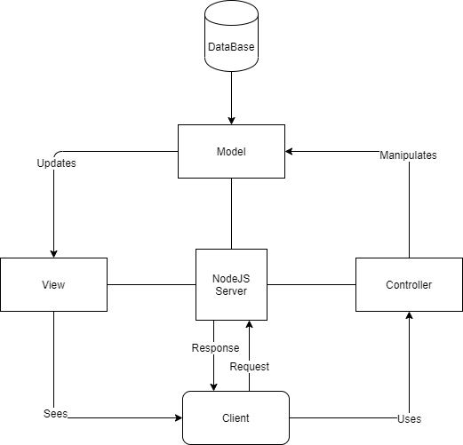
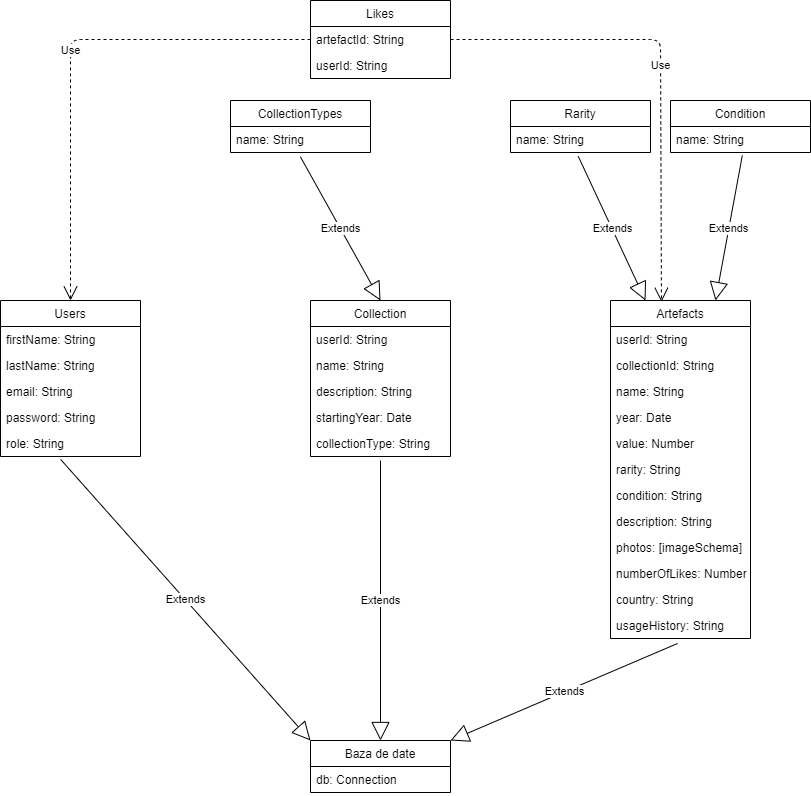

Autori
Zănceanu Robert & Căluțu Maria & Mariniuc Andrei
1. Descriere
In ziua de azi, tot mai multi oameni au pasiuni diverse. O pasiune de sute si sute de ani, care nu a murit nici in prezent, este colectionarea diverselor obiecte. Inspirati de secolul vitezei si era tehnologiei, dorim sa oferim un suport in gestionarea colectiilor si sa le oferim un "share" mult mai usor din cadru online. COLR reprezinta mediu ideal pentru pasionatii de "a le colectionarii". Aceasta permite unui utilzator sa isi creeze mai multe colectii si sa adauge artefacte in ele. Fiecare dintre acestea(colectia si artefactul) va avea niste caracteristici predefinite, stabilite la adaugare, dar vor avea si cate o descriere. Artefactele vor avea o mica istorie, un pret si alte cateva campuri ce au ca si scop descrierea valorii acestuia. O colectie este in mare parte caracterizata de artefactele ce le contine, in descrierea ei aparand cel mai valoros artefact. Artefactele si colectiile pot fi editate folosind structura de la adaugare, fara a lasa sa fie editate lucrurile foarte importante,acestea pot fi importate sub forma de csv sau pdf. In cadrul aplicatiei, utilizatori vor putea aprecia artefactele ce i-au impresionat, iar pe baza lor se va face un clasament sau vor putea consulta pagina de statistici unde vor vedea cati utilizatori ,colectii sau artefacte sunt.
2. Actori
2.1 Utilizator autentificat: Utilizator al internetului ce este înregistrat în baza noastră de date.
2.1.1 Acesta are acces pe toate paginile din interfață
2.1.2 Este autorizat să:
- vizualizeze colecțiile personale
- vizualizeze toate artefactele
- adauge colecții
- adauge artefacte
- să aprecieze artefacte
- să vizualizeze statisticile
- să vizualizeze clasamentul
- se deconecteze
2.2 Administrator: Suplimentar, acesta are acces la informațiile tuturor utilizatorilor, poate dezactiva un cont și de asemenea poate șterge orice colecție sau artefact, chiar dacă acestea nu îi aparțin.
2.3 Serverul: Are rolul de a răspunde cât mai repede cerințelor clientului.
3. Scenarii de utilizare
3.1 Actor: Utilizator autentificat
Scenariu/Pași:
- Se conectează
- Este direcționat către pagina ce conține colecțiile personale
- Accesează pagina de artefacte
- Setează filtrele dorite
- Accesează un artefact
- Apreziază artefactul
- Vizualizează statisticile
- Creează o colecție nouă
- Adaugă artefacte în colecție
- Vizualizează clasamentul
- Se deconectează
3.2 Actor: Administrator
Scenariu/Pași:
- Se conectează
- Șterge colecții
- Șterge artefacte
- Șterge conturi ale utilizatorilor
- Se deconectează
Basic flow
- Utilizatorul va intra pe site si va fi direcționat către pagina de conectare. Acolo poate să se conecteze (dacă are deja un cont valabil) sau poate apăsa butonul de înregistrare care îl trimite pe pagina unde își poate creea un cont nou.
- După ce se va conecta/înregistra va fi redirecționat pe pagina unde sunt listate toate colecțiile personale și de unde poate naviga prin întreaga aplicație folosind meniul de navigare.
- Utilizatorul poate adăuga colecții și artefacte noi. De asemenea, pe langa colecțiile personale, orice utilizator poate vizualiza toate artefactele din baza de date.
- Atât colecțiile cât și artefactele pot fi afișate în baza unor filtre pe care utilizatorul le are la dispoziție. Pe pagina ce conține toate artefactele utilizatorul poate descarca un document fie în format csv, fie în format pdf ce conține toate artefactele pe care le-a adăugat.
- De asemenea, orice utilizator are posibilitatea de a vizualiza statisticile si clasamentul.
Exception flow
- În cazul în care utilizatorul dorește să ajungă direct pe o anumită pagina, dar acea pagină nu este disponibilă, acesta va primi un mesaj de eroare 404.
Basic flow
- În cazul administratorilor, aceștia se conectează și au posibilitatea de a șterge colecții/artefacte si de a șterge conturile utilizatorilor sau de modifica anumite informații.
Exception flow
- În cazul în care administratorul dorește să ajungă direct pe o anumită pagina, dar acea pagină nu este disponibilă, acesta va primi un mesaj de eroare 404.
4. Tehnologii utilizate
Interfața aplicației a fost scrisă folosind HTML5 pentru a crea componentele necesare acesteia și CSS3 pentru a le stiliza.
HTML5 este un limbaj pentru structurarea si prezentarea continutului pentru World Wide Web, iar CSS este un limbaj (style language) care defineste "layout-ul" pentru documentele HTML. CSS acopera culori, font-uri, margini, linii, imagini de fundal, pozitii avansate si multe alte optiuni utile in design.
Partea de backend a aplicației web s-a realizat utilizând Node.js datorită vitezei pentru că folosește JavaScript. Fiind o tehnologie open-source, Node.js are un depozit comun de instrumente și module foarte mare.
PDFKit este o librărie pentru Node.js care ajută la crearea documentelor de tip pdf.
json2csv este o librărie care convertește un fișier de tip json în csv.
Mongoose oferă o soluție simplă pentru a modela datele aplicației.
Toate aceste librării menționate anterior sunt librării open-source.
Pentru baza de date s-a folosit MongoDB.
5. Diagrame
Diagrama Use Case utilizator:

Diagrama Use Case administrator:

Diagrama arhitecturala:
Diagrama bazei de date:
6. Link-uri utile
- https://grokonez.com/node-js/nodejs-use-mongoose-to-save-files-images-to-mongodb
- https://www.npmjs.com/package/mongoose
- https://www.npmjs.com/package/formidable
- https://freefrontend.com/
- https://developer.mozilla.org/en-US/docs/Web/API/EventTarget/addEventListener
- https://youtu.be/2jqok-WgelI
- https://developer.mozilla.org/en-US/docs/Web/API/FormData
- https://guides.emberjs.com/release/routing/query-params/
- https://css-tricks.com/how-to-fetch-and-parse-rss-feeds-in-javascript/
- https://www.w3schools.com/xml/xml_rss.asp